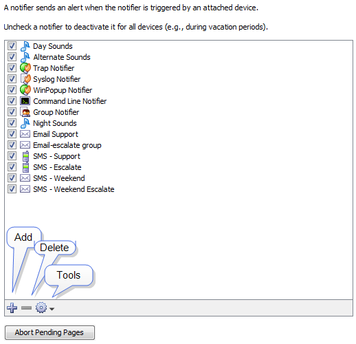

Notifier List
Use the Notifier List section of the Server Settings window to add,
edit, copy and delete notifiers. For more information, see Using
Notifiers.
To view and edit the Notifier List:
-
From the Edit menu, choose Server Settings...
The Server Settings window appears, showing three sections on the left, each containing a list of available settings. On the right is a panel in which the selected settings appear.
- Click Notifier List. A list of notifiers
appears in the right panel of the Server Settings window.

Notifier List Panel
From the Notifier List panel, you can do the following:
- Add a notifier. Click + The Configure Notifier window appears. For detailed
information on configuring notifiers see Configuring
a Notifier.
- Edit an existing notifier.
Click to select the notifier you want to edit, then choose Edit... from the Tools dropdown menu.
The Configure Notifier window appears, showing the current settings for
the selected notifier.
- Duplicate a notifier.
Click to select the notifier you want to duplicate, then choose Duplicate from the Tools menu.
The Configure Notifier window appears, showing the current settings of
the selected notifier, but with the name "<selected notifier>
Copy."
- Delete a notifier.
Click to select a notifier, then click minus ( - ). A confirmation
window appears.
- Abort Pending Pages. All messages sent to pagers still in process are terminated as
soon possible, and any pages waiting to be sent are deleted.
This affects only pages sent to Dialup Pagers; it has no affect on SNPP pages or other notifiers.